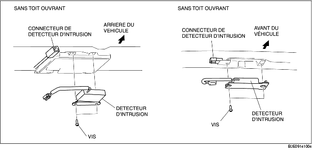

DEPOSE/REPOSE DE CAPTEUR D'INTRUSION
B3E091400172W01
1. Débrancher le câble négatif de la batterie.
2. Déposer les pièces suivantes :
-
(1) Pli de jonction de toit ouvrant (véhicules avec toit ouvrant)
-
(2) Console (4SD) (voir la section DEPOSE/REPOSE DE CONSOLE.)
-
(3) Garniture de montant A (voir la section DÉPOSE/REPOSE DE GARNITURE DE MONTANT A.)
-
(4) Ancrage supérieur de ceinture de sécurité avant (voir la section DEPOSE/REPOSE DE CEINTURE DE SECURITE AVANT.)
-
(5) Bas de portière avant (voir la section DÉPOSE/REPOSE DE BAS DE PORTIÈRE AVANT.)
-
(6) Bas de portière arrière (voir la section DÉPOSE/REPOSE DU BAS DE PORTIÈRE ARRIÈRE.)
-
(7) Garniture inférieure de montant B (voir la section DÉPOSE/REPOSE DE GARNITURE INFÉRIEURE DE MONTANT B.)
-
(8) Garniture supérieure de montant B (voir la section DEPOSE/REPOSE DE GARNITURE SUPERIEURE DE MONTANT B.)
-
(9) Siège arrière (voir la section DÉPOSE/REPOSE DE SIÈGE ARRIÈRE.)
-
(10) Garniture de passage de roue (voir la section DÉPOSE/REPOSE DE GARNITURE DE PASSAGE DE ROUE.)
-
(11) Garniture supérieure latérale de coffre (5HB) (voir la section DÉPOSE/REPOSE DE GARNITURE SUPÉRIEURE LATÉRALE DE COFFRE.)
-
(12) Garniture de montant C (voir la section DEPOSE/REPOSE DE GARNITURE DE MONTANT C.)
-
(13) Lampe de lecture (voir la section DÉPOSE/REPOSE DE LAMPE DE LECTURE.)
-
(14) Lampe intérieure (voir la section DÉPOSE/REPOSE DE LAMPE INTÉRIEURE.)
-
(15) Pare-soleil (voir la section DÉPOSE/REPOSE DE PARE-SOLEIL.)
-
(16) Poignée de maintien (voir la section DÉPOSE/REPOSE DE POIGNÉE DE MAINTIEN.)
3. Déconnecter le capteur d'intrusion.
4. Déposer les vis.

5. Déposer le capteur d'intrusion.
6. Pour la repose, suivre l'ordre inverse de la dépose.